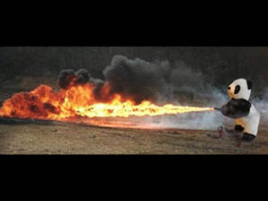

Black panda
 De: La Frikipedia, la enciclopedia extremadamente seria.
De: La Frikipedia, la enciclopedia extremadamente seria.
| De la serie animales y otros bichejos:
|
|
|
| Nombre común:
|
El pequeño cabroncete
|
| Nombre científico:
|
Black panda
|
| Especie:
|
wombat Segundo grado
|
| Subespecie:
|
pokemizado
|
| Alimentación:
|
chonis
-
|
| Apariencia:
|
rata bicolor que quema cosas
|
| Hábitat natural:
|
Nuestros corazones
|
| Localización:
|
Vientrículo indiestro
|
| Número aproximado de ejemplares:
|
cientos, como badger
|
| Fecha de extinción:
|
mas quisieras
|
| Pokemonización:
|
wombat
|
Conocido como Black Panda o el hijo del gran Wombat amarillo, hijo de la orgía entre Pikachu, Papa Negro y Euronymous domino toda la escena del back metal y casi domina el mundo convirtiendo así el Black Metal en forma de destrucción mundial de las Hordas de canis caídas de Leganés que asolan el mundo y toda la galaxia
Curiosidades y curiosidades
Se conoce que el black panda conoce todo lo que escuchas desde la mañana hasta la noche y todo lo que puedas hacer, emerge de las sombras como el Pato Darwin, eminente pato creador de la teoría de Darwin de las pokemonizaciones y gran profesor de la subdivisión de los marmertos.
A la criatura (y al panda) le cabrea como puede ser:
- Tu pasión por el pop.
- Que no escuches black metal.
- Darle una patada en el hueval.
- Darle una patada en la cara.
- Cantar el himno al Fary.
- Que le recuerden que es hijo de una rata.
- Que las manos le huelan a chorizo cuando se hace un bocata de chorizo, después de haberse comido el bocata de chorizo...
- Las listas de los guarrenta principales en los que aparecen muestras de las mejores pifiadas creadas para subsistir en el mundo sin música creado por Sinaoreja.
- La tabla de multiplicar del dos, cualquier operación se resuelve con la tabla del cero, que viene a ser un porrón de ceros.
- Se dice que el Black Panda es el creador del metal xungo con las patatas fritas sabor Pollo asado y es conocido por darle sabor a cosas, cosas, que no sabían a esas cosas, como brécol es a un pié y fuet al chorizo. Por eso está entre los candidatos que han dominado el mundo, como fueron sus predecesores Wombat y Pikachu.
¿Cómo saber si black panda?
Un claro efecto del virus Panda
 Típico Black Panda orinando fuego
Ésta es una cuestión que atañe a todos los blackmetaleros del mundo, cómo saber si eres un black panda, o si has llegado a serlo, para empezar tu padre siendo pokocho y escuchando black metal todo el día, lo eres, simplemente.
- Te miras a un espejo y tienes la cara pintada.
- Haber nacido con la cara pintada
- Te miras el cuerpo y encuentras la marca del panda.
- Grandes retortijones te recorren el cuerpo, vomitas, tienes cagalera y no puedes dejar de gritar Blackaaa blackaaa Pandaaa como eso de Wasssssaaaa wasssssaaaaa!!!
- Suma, dos mas dos y te sale 5.
- Si te muerde un wombat aparte de morirte, te conviertes en un black panda, antes de convertirte en un muerto todo por conseguir una super-raza Aria Giovanni.
Lo que nunca quisiste saber de un Black panda
- Un black panda confluye al váter unas dos mas dos veces a la hora para realizar un poderoso ritual ante el trono, el gran Trono Panda.
- Un Black panda se dedica a robar caramelos en su tiempo libre, el tiempo que dispone entre ceja y ceja.
- Un Black panda no es recipiente, fluye como el agua... Be guoter mai frien!!
- Un Black panda tiene miedo de la oscuridad cuando no lleva el gorro puesto.
- Si un black panda decide matarte es porque eres parte de su plan para dominar el mundo.
 Biología Biología
|
Rarezas biológicas inclasificables
|
Autor(es):
- Nexo
- Viento
- Übermendrugo
- Veni Vidi Vici
- Mel-o
- Lord Black wizard
- Kevrochi
- MasterTonight
- Jidef
Frikipedia 2005-2016, Licencia
GFDL 1.2 - Extraído por FrikiLeaks